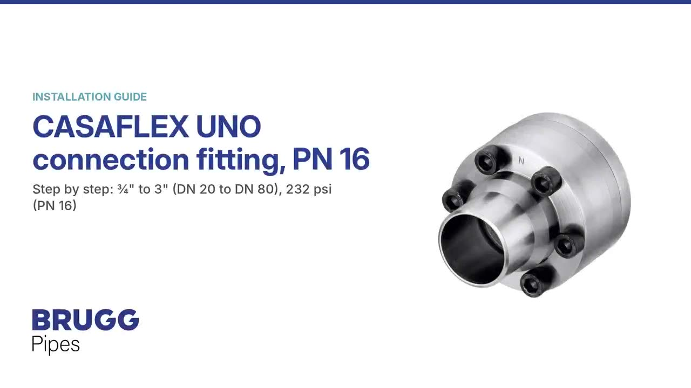
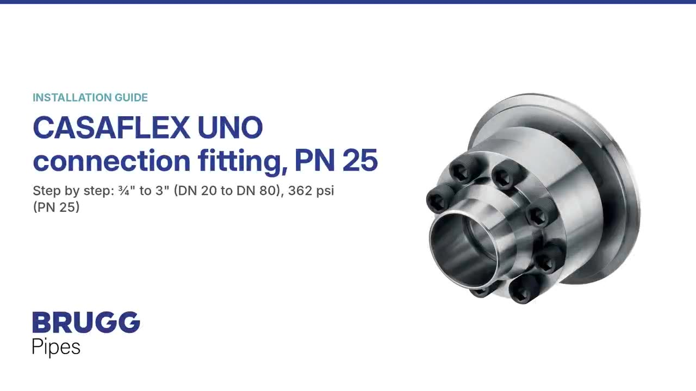
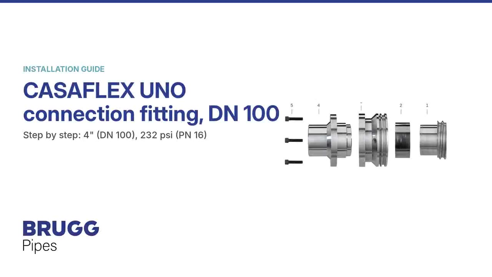
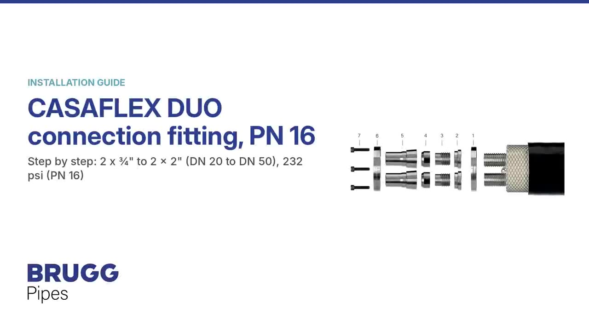

CASAFLEX family
Four sub-products. Pick yours.

CASAFLEX UNO PN 16
Single pipe- ¾" to 3" (DN 20 to DN 80)
- 232 psi (PN 16)
- Bolted connection fitting, no field welds

CASAFLEX UNO PN 25
Single pipe- ¾" to 3" (DN 20 to DN 80)
- 362 psi (PN 25)
- Bolted connection fitting, no field welds

CASAFLEX UNO DN 100
Single pipe- 4" (DN 100)
- 232 psi (PN 16)
- Bolted connection fitting, no field welds

CASAFLEX DUO
Twin pipe- 2 × ¾" to 2 × 2" (DN 20 to DN 50)
- 232 psi (PN 16)
- Bolted connection fitting, no field welds
Single pipe
CASAFLEX UNO PN 16
¾" to 3" (DN 20 to DN 80), 232 psi (PN 16). One narrated installation video and the original installation manual for this connection fitting.
- Sizes¾" to 3" (DN 20 to DN 80)
- Operating pressure232 psi (PN 16)
- Installation video6:54 min
- Installation manualGerman / English
| Size | Type | Inner diameter | Jacket | Min. bending radius | Weight | Max. coil, standard | Max. coil, wide |
|---|---|---|---|---|---|---|---|
| ¾" | CFL 22/91 | 0.87 in (22 mm) | 3.58 in (91 mm) | 3.3 ft (1.0 m) | 0.87 lb/ft (1.30 kg/m) | 1,049 ft (320 m) | 1,509 ft (460 m) |
| 1" | CFL 30/111 | 1.18 in (30 mm) | 4.37 in (111 mm) | 3.3 ft (1.0 m) | 1.30 lb/ft (1.93 kg/m) | 738 ft (225 m) | 1,049 ft (320 m) |
| 1¼" | CFL 39/126 | 1.54 in (39 mm) | 4.96 in (126 mm) | 4.0 ft (1.2 m) | 1.75 lb/ft (2.60 kg/m) | 360 ft (110 m) | 475 ft (145 m) |
| 1½" | CFL 48/126 | 1.89 in (48 mm) | 4.96 in (126 mm) | 4.0 ft (1.2 m) | 1.96 lb/ft (2.92 kg/m) | 360 ft (110 m) | 475 ft (145 m) |
| 2" | CFL 60/142 | 2.36 in (60 mm) | 5.59 in (142 mm) | 5.0 ft (1.5 m) | 2.38 lb/ft (3.54 kg/m) | 328 ft (100 m) | 459 ft (140 m) |
| 2½" | CFL 75/162 | 2.95 in (75 mm) | 6.38 in (162 mm) | 6.0 ft (1.8 m) | 3.23 lb/ft (4.80 kg/m) | 288 ft (88 m) | 377 ft (115 m) |
| 3" | CFL 98/162 | 3.86 in (98 mm) | 6.38 in (162 mm) | 6.6 ft (2.0 m) | 3.83 lb/ft (5.70 kg/m) | 288 ft (88 m) | 377 ft (115 m) |
Values from the CASAFLEX Technical Data Sheet, November 16, 2026.
Single pipe
CASAFLEX UNO PN 25
¾" to 3" (DN 20 to DN 80), 362 psi (PN 25). One narrated installation video and the original installation manual for this connection fitting.
- Sizes¾" to 3" (DN 20 to DN 80)
- Operating pressure362 psi (PN 25)
- Installation video9:03 min
- Installation manualGerman / English
| Size | Type | Inner diameter | Jacket | Min. bending radius | Weight | Max. coil, standard | Max. coil, wide |
|---|---|---|---|---|---|---|---|
| ¾" | CFL 22/91 | 0.87 in (22 mm) | 3.58 in (91 mm) | 3.3 ft (1.0 m) | 0.87 lb/ft (1.30 kg/m) | 1,049 ft (320 m) | 1,509 ft (460 m) |
| 1" | CFL 30/111 | 1.18 in (30 mm) | 4.37 in (111 mm) | 3.3 ft (1.0 m) | 1.30 lb/ft (1.93 kg/m) | 738 ft (225 m) | 1,049 ft (320 m) |
| 1¼" | CFL 39/126 | 1.54 in (39 mm) | 4.96 in (126 mm) | 4.0 ft (1.2 m) | 1.75 lb/ft (2.60 kg/m) | 360 ft (110 m) | 475 ft (145 m) |
| 1½" | CFL 48/126 | 1.89 in (48 mm) | 4.96 in (126 mm) | 4.0 ft (1.2 m) | 1.96 lb/ft (2.92 kg/m) | 360 ft (110 m) | 475 ft (145 m) |
| 2" | CFL 60/142 | 2.36 in (60 mm) | 5.59 in (142 mm) | 5.0 ft (1.5 m) | 2.38 lb/ft (3.54 kg/m) | 328 ft (100 m) | 459 ft (140 m) |
| 2½" | CFL 75/162 | 2.95 in (75 mm) | 6.38 in (162 mm) | 6.0 ft (1.8 m) | 3.23 lb/ft (4.80 kg/m) | 288 ft (88 m) | 377 ft (115 m) |
| 3" | CFL 98/162 | 3.86 in (98 mm) | 6.38 in (162 mm) | 6.6 ft (2.0 m) | 3.83 lb/ft (5.70 kg/m) | 288 ft (88 m) | 377 ft (115 m) |
Values from the CASAFLEX Technical Data Sheet, November 16, 2026.
Single pipe
CASAFLEX UNO DN 100
4" (DN 100), 232 psi (PN 16). One narrated installation video and the original installation manual for this connection fitting.
- Sizes4" (DN 100)
- Operating pressure232 psi (PN 16)
- Installation video4:32 min
- Installation manualGerman / English
| Size | Type | Inner diameter | Jacket | Min. bending radius | Weight | Max. coil, standard | Max. coil, wide |
|---|---|---|---|---|---|---|---|
| 4" | CFL 127/202 | 5.00 in (127 mm) | 8.27 in (210 mm) | 9.2 ft (2.8 m) | 5.91 lb/ft (8.80 kg/m) | 111 ft (34 m) | 157 ft (48 m) |
Values from the CASAFLEX Technical Data Sheet, November 16, 2026.
Twin pipe
CASAFLEX DUO
2 × ¾" to 2 × 2" (DN 20 to DN 50), 232 psi (PN 16). One narrated installation video and the original installation manual for this connection fitting.
- Sizes2 × ¾" to 2 × 2" (DN 20 to DN 50)
- Operating pressure232 psi (PN 16)
- Installation video4:29 min
- Installation manualGerman / English
| Size | Type | Inner diameter, each | Jacket | Min. bending radius | Weight | Max. coil, standard | Max. coil, wide |
|---|---|---|---|---|---|---|---|
| 2 × ¾" | CFL 22+22/111 | 0.87 in (22 mm) | 4.37 in (111 mm) | 3.7 ft (1.1 m) | 1.68 lb/ft (2.5 kg/m) | 738 ft (225 m) | 1,049 ft (320 m) |
| 2 × 1" | CFL 30+30/126 | 1.18 in (30 mm) | 4.96 in (126 mm) | 4.6 ft (1.4 m) | 2.08 lb/ft (3.1 kg/m) | 360 ft (110 m) | 475 ft (145 m) |
| 2 × 1¼" | CFL 39+39/142 | 1.54 in (39 mm) | 5.59 in (142 mm) | 5.0 ft (1.5 m) | 2.49 lb/ft (3.7 kg/m) | 328 ft (100 m) | 459 ft (140 m) |
| 2 × 1½" | CFL 48+48/162 | 1.89 in (48 mm) | 6.38 in (162 mm) | 6.0 ft (1.8 m) | 2.82 lb/ft (4.2 kg/m) | 288 ft (88 m) | 377 ft (115 m) |
| 2 × 2" | CFL 60+60/182* | 2.36 in (60 mm) | 7.17 in (182 mm) | 6.6 ft (2.0 m) | 3.43 lb/ft (5.1 kg/m) | on request | on request |
* Type 60+60/182: maximum continuous operating temperature 266 °F (130 °C). The maximum coil length is set by the jacket diameter and applies to UNO and DUO alike. Values from the CASAFLEX Technical Data Sheet, November 16, 2026.
Contact
Send us your route. We size it and price it.
BRUGG Pipes supports your project with pressure-loss and heat-loss sizing, routing and installer training.